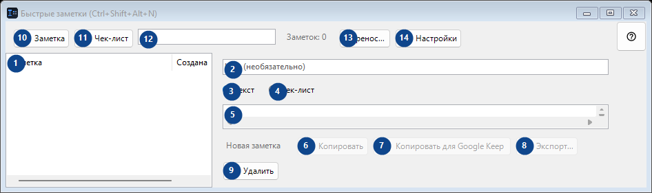
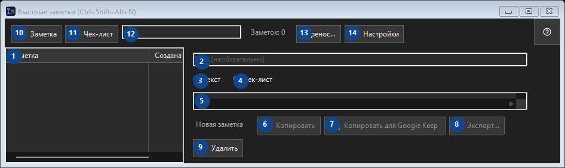

Быстрые заметки (Ctrl+Shift+Alt+N)
Для чего это окно
Маленький локальный блокнот: по хоткею открыть, бросить фрагмент кода или мысль, закрыть.


Порядок действий
Прочитайте пояснения к номерам, выберите нужные значения и продолжите командой окна.
Элементы
1. Элементы
Здесь показано текущее содержимое или состояние. Выберите запись для работы с ней. Заметка / Создана
Ваши сочетания клавиш2. Выберите или введите значение для соседней подписи. Проверьте его перед продолжением.
Выберите или введите значение для соседней подписи. Проверьте его перед продолжением.
Ваши сочетания клавиш3. Текст
Используйте команду, когда нужно указанное действие. Прочитайте запрос подтверждения перед согласием.
Ваши сочетания клавиш4. Чек-лист
Используйте команду, когда нужно указанное действие. Прочитайте запрос подтверждения перед согласием.
Ваши сочетания клавиш5. Выберите или введите значение для соседней подписи. Проверьте его перед продолжением.
Выберите или введите значение для соседней подписи. Проверьте его перед продолжением.
Ваши сочетания клавиш6. Копировать
Используйте команду, когда нужно указанное действие. Прочитайте запрос подтверждения перед согласием. Элемент сейчас недоступен. Сначала включите функцию или выберите запись.
Ваши сочетания клавиш7. Копировать для Google Keep
Используйте команду, когда нужно указанное действие. Прочитайте запрос подтверждения перед согласием. Элемент сейчас недоступен. Сначала включите функцию или выберите запись.
Ваши сочетания клавиш8. Экспорт...
Используйте команду, когда нужно указанное действие. Прочитайте запрос подтверждения перед согласием. Элемент сейчас недоступен. Сначала включите функцию или выберите запись.
Ваши сочетания клавиш9. Удалить
Используйте команду, когда нужно указанное действие. Прочитайте запрос подтверждения перед согласием.
Ваши сочетания клавиш10. Заметка
Используйте команду, когда нужно указанное действие. Прочитайте запрос подтверждения перед согласием.
Ваши сочетания клавиш11. Чек-лист
Используйте команду, когда нужно указанное действие. Прочитайте запрос подтверждения перед согласием.
Ваши сочетания клавиш12. Заметок: 0
Выберите или введите значение для соседней подписи. Проверьте его перед продолжением.
Ваши сочетания клавиш13. Перенос...
Используйте команду, когда нужно указанное действие. Прочитайте запрос подтверждения перед согласием.
Ваши сочетания клавиш14. Настройки
Используйте команду, когда нужно указанное действие. Прочитайте запрос подтверждения перед согласием.
Ваши сочетания клавиш